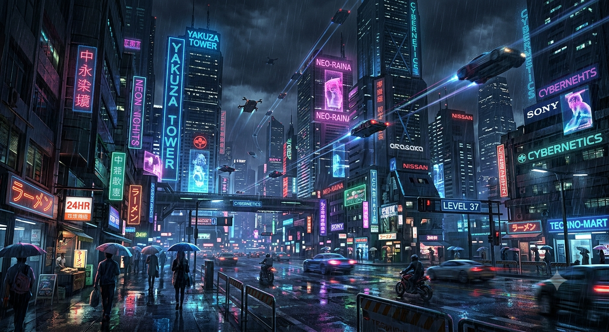

Défense Néon
Niveau -
Niveau maximum atteint
Victoire !
Vagues franchies : -
Intégrité restante : -
XP gagnée : -
-
Défaite
Vague atteinte : -
XP gagnée : -
-
-
-
Niveau maximum atteint
Crédits : -
Intégrité : -
Tours : -
Vague : -
Graine : -